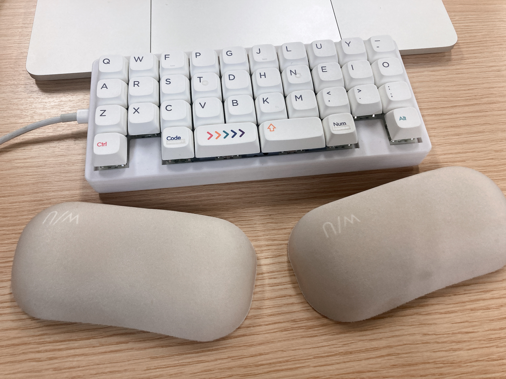

とりあえずなんか書いてみた
せっかくいろんな自作キーボードを作ったというのに、それで長文を書く機会をなかなか得られずにいる。
というのも、実は、椅子に座ってキーボードに腕を構えていざ、と気合を入れて日本語を書くスタイルに慣れていないから。つい昨日出したばかりの記事は、布団の上でスマホで書きあげたのを移植したものだ。遠い話、文芸部に短編を寄稿していたときも、行き帰りの電車でスマホにしたためた文字を帰宅後PCで清書するスタイルだったように思う。
やはり、なんでもできる薄い板が手に馴染む世代であるからには、「全部スマホで済ましちゃえ」という圧力には逆らえないのかもしれない。実に800日以上毎日日記を更新し続けている猛者が知り合いにいるが、おそらく彼も執筆作業をスマホで完結させることによって、細かな空き時間のうちに更新を済ませているのだろう。（あっもしがっつりPCで書いてるとかだったらごめんね、マジですごいと思う……）
とはいえ、やっぱり道具は使わないと勿体ない。ということで、特に内容があるわけではないもののとりあえず日記らしき何かを書いているのが今。せっかくなので今使っているキーボードの話でもしようか。
KEEB_PB初参加🎉
— ₍₍⁽⁽🍳₎₎⁾⁾ (@sal_pipr) October 29, 2023
Keyboard: banime40
Switch: Gateron Baby kangaroo
Keycap: NP PBT Crayon#KEEB_PD #KEEB_PD_R170 pic.twitter.com/GDfLZWgYsd
うちのbanime40ちゃん。ガスケットマウントの柔らかさとbaby kangarooの軽やかな硬さとが調和して現時点で我が家最強の打ち心地を誇っている。
np crayonのカラフルさを活かしたくてこのツイート時点ではキーキャップをカタナ式に並べていたが、今はcolemakに一致するよう変更している。これはこれで落ち着きがあって良い。

より特筆すべきは論理配列の方だろう。現状では、英数入力時にはcolemak、かな入力時には新下駄配列に薙刀式編集モードを組み合わせている。
薙刀式はあまり肌（というか指か）に合わなかった。おそらく、少し硬めのキースイッチで突き刺し打ちに近い打ち方をしているからと思われる。ゆくゆくは速度を求めるなら撫で打ちに慣れたほうが良いのかもしれないが……。ピアノの経験があるからか、跳ね返り感のあるキーを垂直に叩くほうが、打っていてより「楽しい」「心地よい」と感じる傾向にあるらしい。ということで、かな部分は新下駄配列で練習をしている。
編集モードの方は万人におすすめしたい。「再変換」→「確定+End」を覚えるだけでも、誤変換の修正に伴うストレスが大幅に軽減した。eswai氏によるQMKでの実装を用いて比較的簡単に導入できる（もちろん最低限のQMKに対する知識は要るが）。同氏には感謝してもしきれない。新下駄配列も、この実装のかな部分を変更するだけで実現可能だ。
うう……なんかかたっ苦しい文調になってきた。こういうものを書くつもりではなかったんだけども。長文を改まって書こうと思うとこうなってしまうね。
でも、さしあたり新下駄で程々の執筆速度が出せることを確認できたのは収穫かな。ずっと寿司打をしていた成果が現れつつある。少なくとも、もう配列表を見返す必要はないレベルまで来れたんじゃないかなと。
お勧め5,000円コース【普通】で、
— ₍₍⁽⁽🍳₎₎⁾⁾ (@sal_pipr) December 2, 2023
★2,260円分 お得でした！（速度：4.0key/秒、ミス：12key）
https://t.co/WXO7TpVcYO #寿司打
おおお
もちろん誤タイプはたくさんあるし、qwertyローマ字ほどの速度を出せるわけでもない。けど、趣味の作文目的では、申し分ない程度に「楽しい」と言えそうだ。機会を見つけてもっといろんな内容を書いていきたいね。
記念すべき、初の例の構文ですわよ。
この記事は、banime40+新下駄配列で書きました👏